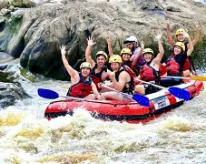

Our mission is to deliver safe, exhilarating, and unforgettable whitewater rafting experiences that connect adventurers with the raw beauty of the river. Whether you are a first-time paddler or a seasoned thrill-seeker, our certified guides ensure every trip is packed with camaraderie and excitement.